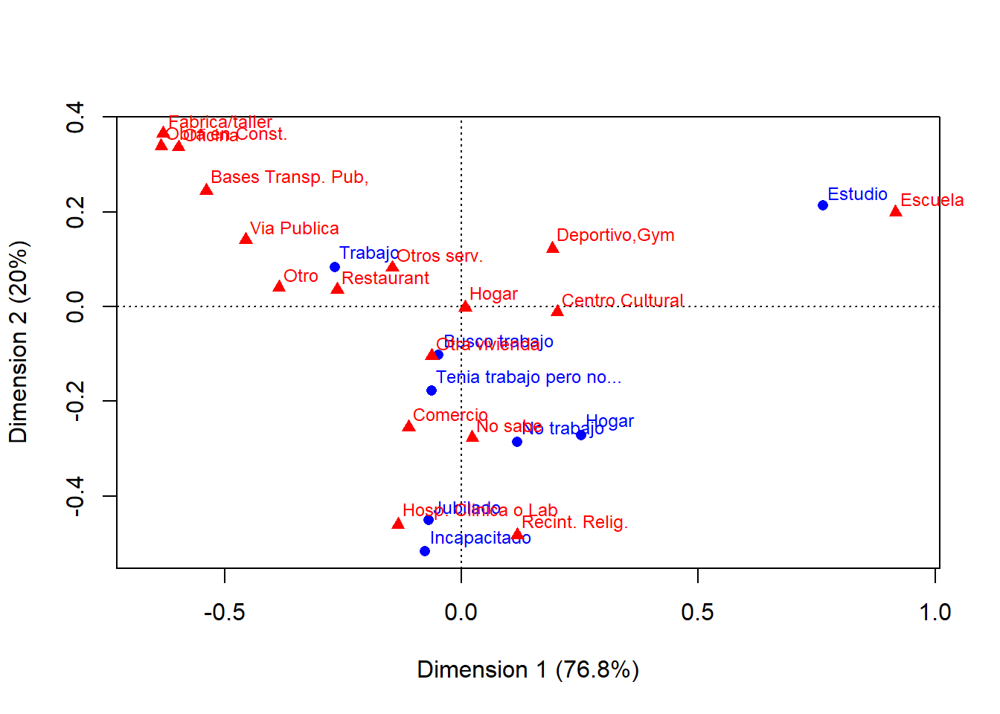
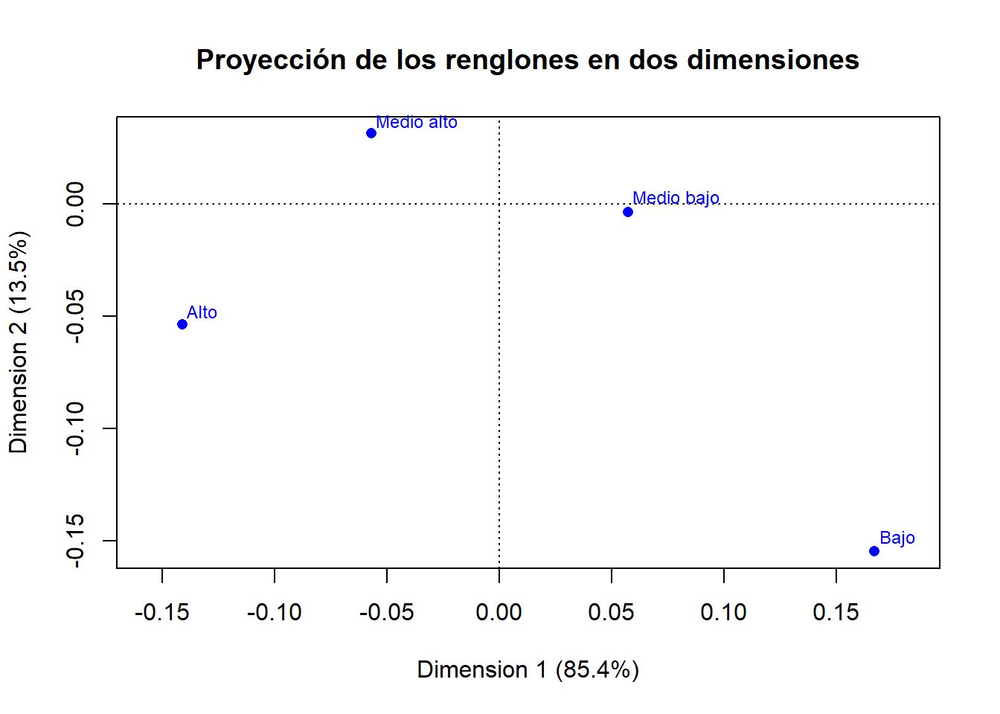
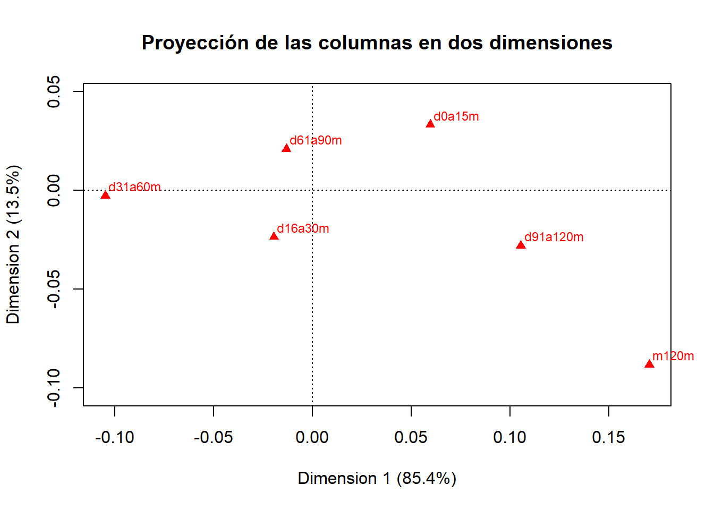

Análisis Multivariado
1. Análisis de Correspondencias de las Variables: Condición de actividad de la persona (P3_7), y Destino de los viajes realizados (P5_11A).
Metodología.
Se inicia con un análisis de correspondencias entre la variable de condición de actividad de la persona (pregunta P3_7) y el destino de sus viajes realizados (P5_11A), con la intención de indagar la relación existente entre estos datos.
Las categorías de la variable Condición de Actividad son:
- 1 Trabajó
- 2 Tenía trabajo, pero no trabajó
- 3 Buscó trabajo
- 4 Es estudiante
- 5 Se dedica a los quehaceres del hogar o a cuidar a sus hijos
- 6 Es jubilado(a) o pensionado(a)
- 7 Está incapacitado(a) permanentemente para trabajar
- 8 No trabajó
Mientras que las de la variable Destino del viaje son:
- 01 Su hogar
- 02 Escuela
- 03 Oficina
- 04 Fábrica o taller
- 05 Comercio, mercado, tienda o centro comercial
- 06 Centro cultural o área recreativa
- 07 Otra vivienda
- 08 Hospital, clínica, consultorio, laboratorio clínico
- 09 Restaurante, bar, cafetería
- 10 Deportivo, gimnasio
- 11 Bases o estaciones de transporte público
- 12 Obra en construcción
- 13 Otros servicios
- 14 Recinto religioso
- 15 Vía pública
- 16 Otro
- 99 No sabe
Se comienza, por lo tanto, leyendo los datos y adjuntando la variable P3_7 de la tabla TSDem a la tabla TViaje:
viajes <- read.csv("bd/tviaje2.csv")
tsdem <- read.csv("bd/tsdem.csv")
library(sqldf)
viajes2 <- sqldf("SELECT viajes.*, tsdem.niv, tsdem.p3_7 FROM viajes LEFT JOIN
tsdem ON viajes.id_soc = tsdem.id_soc")
rm(viajes)Luego, con ello se arma la matriz de datos y se analizan su independencia con la prueba de \(\chi^2\):
# Se genera la tabla de contingencia entre las variables seleccionadas
analisis_1<-table(viajes2$p3_7, viajes2$p5_11a)
rownames(analisis_1) <- c("Trabajo","Tenia trabajo pero no...","Busco trabajo","Estudio","Hogar","Jubilado","Incapacitado","No trabajo")
colnames(analisis_1) <- c("Hogar","Escuela","Oficina","Fabrica/taller","Comercio","Centro Cultural ","Otra vivienda","Hosp. Clinica o Lab","Restaurant","Deportivo,Gym","Bases Transp. Pub,","Obra en Const.","Otros serv.","Recint. Relig.","Via Publica","Otro","No sabe")
# Tabla de contingencia:
analisis_1##
## Hogar Escuela Oficina Fabrica/taller Comercio Centro Cultural
## Trabajo 132148 12877 30884 19345 46981 6007
## Tenia trabajo pero no... 1180 184 119 93 438 50
## Busco trabajo 2651 410 336 181 1030 208
## Estudio 34224 23404 777 313 5390 2758
## Hogar 37194 11229 619 295 18946 1622
## Jubilado 9286 635 483 108 4686 853
## Incapacitado 895 64 39 14 361 68
## No trabajo 11022 2362 422 261 5074 788
##
## Otra vivienda Hosp. Clinica o Lab Restaurant Deportivo,Gym
## Trabajo 15707 5582 2379 1051
## Tenia trabajo pero no... 204 143 24 9
## Busco trabajo 478 119 38 29
## Estudio 3098 578 319 482
## Hogar 4501 2035 254 210
## Jubilado 1485 1257 268 105
## Incapacitado 128 230 17 10
## No trabajo 1635 923 126 104
##
## Bases Transp. Pub, Obra en Const. Otros serv. Recint. Relig. Via Publica
## Trabajo 2674 1153 751 1090 1253
## Tenia trabajo pero no... 17 13 10 15 6
## Busco trabajo 33 13 16 36 9
## Estudio 88 16 139 301 52
## Hogar 106 4 120 686 116
## Jubilado 84 6 45 277 39
## Incapacitado 6 7 4 27 12
## No trabajo 76 29 56 242 59
##
## Otro No sabe
## Trabajo 4079 498
## Tenia trabajo pero no... 34 5
## Busco trabajo 85 12
## Estudio 245 97
## Hogar 457 249
## Jubilado 283 50
## Incapacitado 24 2
## No trabajo 249 73chiR<-chisq.test(analisis_1)
# Inercia total medida de la variabilidad de los datos en la tabla
n<-sum(analisis_1)
inetot<-chiR$statistic/n
print(chiR)##
## Pearson's Chi-squared test
##
## data: analisis_1
## X-squared = 88548, df = 112, p-value < 2.2e-16print(inetot)## X-squared
## 0.1810906Por el p-valor se rechaza \(H_0\), lo que establece que las variables analizadas son dependientes.
Resultados.
Se genera la proyección conjunta de los datos en dos dimensiones:
library("ca")
corres <-ca (analisis_1,nd=2)
plot(corres)
## Presenta informacion del modelo de análisis de correspondencia
corres##
## Principal inertias (eigenvalues):
## 1 2 3 4 5 6 7
## Value 0.139003 0.036202 0.00495 0.000638 0.000217 6.2e-05 1.7e-05
## Percentage 76.76% 19.99% 2.73% 0.35% 0.12% 0.03% 0.01%
##
##
## Rows:
## Trabajo Tenia trabajo pero no... Busco trabajo Estudio Hogar Jubilado Incapacitado
## Mass 0.581751 0.005203 0.011624 0.147823 0.160834 0.040800 0.003902
## ChiDist 0.279694 0.295264 0.192575 0.794118 0.386925 0.503333 0.758580
## Inertia 0.045510 0.000454 0.000431 0.093221 0.024079 0.010336 0.002245
## Dim. 1 -0.716012 -0.170514 -0.130360 2.049247 0.679787 -0.186131 -0.205301
## Dim. 2 0.437988 -0.934589 -0.541033 1.120821 -1.428662 -2.367958 -2.718875
## No trabajo
## Mass 0.048062
## ChiDist 0.316522
## Inertia 0.004815
## Dim. 1 0.313769
## Dim. 2 -1.504969
##
##
## Columns:
## Hogar Escuela Oficina Fabrica/taller Comercio Centro Cultural Otra vivienda
## Mass 0.467513 0.104638 0.068877 0.042150 0.169552 0.025265 0.055701
## ChiDist 0.008413 0.938255 0.686142 0.729330 0.291595 0.295874 0.140737
## Inertia 0.000033 0.092116 0.032427 0.022420 0.014417 0.002212 0.001103
## Dim. 1 0.021087 2.458534 -1.603133 -1.690494 -0.300147 0.541088 -0.169866
## Dim. 2 -0.010266 1.048070 1.768948 1.920421 -1.339493 -0.061688 -0.550535
## Hosp. Clinica o Lab Restaurant Deportivo,Gym Bases Transp. Pub, Obra en Const. Otros serv.
## Mass 0.022224 0.007005 0.004090 0.006307 0.002538 0.002333
## ChiDist 0.571977 0.356065 0.297232 0.593811 0.731858 0.192152
## Inertia 0.007271 0.000888 0.000361 0.002224 0.001359 0.000086
## Dim. 1 -0.360460 -0.704730 0.514553 -1.445843 -1.701857 -0.391919
## Dim. 2 -2.419962 0.189032 0.641463 1.286723 1.783612 0.431005
## Recint. Relig. Via Publica Otro No sabe
## Mass 0.005469 0.003162 0.011158 0.002016
## ChiDist 0.511611 0.488817 0.400770 0.310329
## Inertia 0.001431 0.000755 0.001792 0.000194
## Dim. 1 0.315245 -1.223383 -1.034447 0.060501
## Dim. 2 -2.540051 0.738081 0.212281 -1.459255Interpretación.
La dimensión 2 actúa como un discriminante a pesar del poco valor de variabilidad (20%) ya que los valores mas altos (extremos) se presentan en la parte superior de la gráfica.
Analisis de la gráfica de correspondencia.
Cuadrante I
Se observa que las personas que se dedican a los quehaceres del hogar y que no tienen trabajo, tienen como destino más común su hogar, centro cultural o área recreativa, los recintos religiosos y algunos no lo saben.
Cuadrante II
Cuando la persona que viaja busca trabajo, tenia trabajo, pero no trabajó, es jubilada o pensionada, o está incapacitada permanentemente para trabajar, tiene como destino los mercados, comercios,tienda o centro comercial, y hospitales, clínicas, consultorios, etc.
Cuadrante III
Cuando la persona que viaja tiene trabajo, sus destinos mas frecuentes son: Fábrica/taller, Hogar, escuela, oficina, estaciones de transporte público, vía pública, otros lugares, restaurantes, bar, cafetería y otros servicios.
Cuadrante IV
Cuando se es estudiante, los destinos mas frecuentes son: Deportivo/gimnasio y Escuela.
Conclusión.
En el análisis multivariado es importante tener una visión rápida y de preferencia gráfica del comportamiento de los datos. En nuestro caso, para las dos variables seleccionadas, condición de actividad de la persona (P3_7) y destino de los viajes realizados (P5_11A), una de estas técnicas descriptivas que se adecua muy bien es el análisis de correspondencias, el cual nos permite elaborar un mapa perceptual de las categorías de las variables analizadas en un espacio de pocas dimensiones (2), ya que con dichas dimensiones se tiene un porcentaje alto de variabilidad explicada (96.8%), lo facilita su interpretación gráfica, en donde la mayor o menor distancia entre los puntos reflejan cierto grado de asociación entre las categorías representadas. Seleccionamos esta técnica de análisis porque se aplica a variables categóricas.
2. Análisis de correspondencias de las variables: Estrato socioeconómico (Estrato), y duración del viaje.
Metodología.
La duración de los viajes es una variable que se captó de forma indirecta, ya que se recopilaron los datos de las horas de inicio y fin de cada viaje. La suposición inicial es que los estratos socioeconómicos más bajos utilizan mayor cantidad de tiempo viajando, debido a las limitaciones en la movilidad a las que se encuentran sometidos.
Las categorías de la variable Estrato son:
- 1 Bajo
- 2 Medio bajo
- 3 Medio alto
- 4 Alto
Comenzamos por lo tanto, por calcular la duración de los viajes en minutos, a partir de las horas de inicio y término.
d1 <- ifelse(viajes2$p5_10_1 < viajes2$p5_9_1,
viajes2$p5_10_1+24, viajes2$p5_10_1)
viajes2$duracion <- (d1-viajes2$p5_9_1)*60 +
viajes2$p5_10_2-viajes2$p5_9_2Después, dado que se requiere categorizar a la variable continua denominada duracion, se procede a generar variables de rangos de minutos, según los siguientes intervalos:
- De 0 a 15 minutos (d0a15m)
- De 16 a 30 minutos (d16a30m)
- De 31 a 60 minutos (d31a60m)
- De 61 a 90 minutos (d61a90m)
- De 91 a 120 minutos (d91a120m)
- Más de 120 minutos (m120m)
viajes2$d0a15m <- ifelse(viajes2$duracion >= 0 & viajes2$duracion <= 15, 1, 0)
viajes2$d16a30m <- ifelse(viajes2$duracion >= 16 & viajes2$duracion <= 30, 1, 0)
viajes2$d31a60m <- ifelse(viajes2$duracion >= 31 & viajes2$duracion <= 60, 1, 0)
viajes2$d61a90m <- ifelse(viajes2$duracion >= 61 & viajes2$duracion <= 90, 1, 0)
viajes2$d91a120m <- ifelse(viajes2$duracion >= 91 & viajes2$duracion <= 120, 1, 0)
viajes2$m120m <- ifelse(viajes2$duracion >= 121, 1, 0)Y con ello se procede a generar la tabla de contingencia de las variables de interés:
tc <- sqldf("SELECT estrato, m120m, d91a120m, d61a90m, d31a60m, d16a30m,
d0a15m, COUNT(*) FROM viajes2 GROUP BY estrato, m120m, d91a120m,
d61a90m, d31a60m, d16a30m, d0a15m")
mat_cont <- matrix(tc[1:24,8], ncol=6, byrow=TRUE)
rownames(mat_cont) <- c("Bajo", "Medio bajo", "Medio alto", "Alto")
colnames(mat_cont) <- c("d0a15m","d16a30m","d31a60m","d61a90m","d91a120m","m120m")
mat_cont## d0a15m d16a30m d31a60m d61a90m d91a120m m120m
## Bajo 1341 1311 880 490 382 368
## Medio bajo 92422 80512 63163 32050 21081 12598
## Medio alto 47149 43047 39984 18226 9115 4749
## Alto 15211 18335 17204 6635 3455 1886Aplicamos la prueba \(\chi^2\), para explorar su comportamiento respecto a la independencia de las categorías:
chisq.test(mat_cont)##
## Pearson's Chi-squared test
##
## data: mat_cont
## X-squared = 3395.3, df = 15, p-value < 2.2e-16Donde puede verse que de acuerdo al p-valor < 0.05, se rechaza la hipótesis de independencia, lo que seguramente tendrá impacto directo en la forma en que se aproximen las categorías en la proyección conjunta de los datos en el análisis de correspondencias.
Resultados.
Se aplica a continuación el análisis de correspondencias nuevamente con la librería ca:
ac_datos <- ca(mat_cont, nd = 2)
ac_datos##
## Principal inertias (eigenvalues):
## 1 2 3
## Value 0.005457 0.00086 7e-05
## Percentage 85.44% 13.46% 1.1%
##
##
## Rows:
## Bajo Medio bajo Medio alto Alto
## Mass 0.008977 0.567775 0.305252 0.117996
## ChiDist 0.239172 0.057521 0.065411 0.150958
## Inertia 0.000514 0.001879 0.001306 0.002689
## Dim. 1 2.260554 0.776101 -0.771900 -1.909552
## Dim. 2 -5.271619 -0.114956 1.073024 -1.821679
##
##
## Columns:
## d0a15m d16a30m d31a60m d61a90m d91a120m m120m
## Mass 0.293688 0.269388 0.228052 0.107979 0.064021 0.036872
## ChiDist 0.068323 0.031349 0.104899 0.026836 0.110230 0.193895
## Inertia 0.001371 0.000265 0.002509 0.000078 0.000778 0.001386
## Dim. 1 0.808069 -0.263787 -1.418698 -0.178480 1.428388 2.308057
## Dim. 2 1.133408 -0.804079 -0.094627 0.714520 -0.952397 -3.006608Que nos arroja los resultados más importantes de la proyección en dos dimensiones (valores propios, varianza explicada, masa, inercia, por renglones y columnas).
Podemos ver, por ejemplo, que la varianza explicada por la primera coordenada es de poco más del 85%, lo cual significa que el problema de proyección en realidad es casi unidimensional, por lo que hay que darle más importancia a lo visto o representado sobre el primer eje que a lo visto sobre el segundo.
Los datos también contienen por supuesto las coordenadas de las dos dimensiones para renglones y columnas, las cuales pueden graficarse.
Tomamos en primer lugar la proyección de los renglones:
plot.ca(ac_datos, what=c("all", "none"),
main="Proyección de los renglones en dos dimensiones")
Y la de las columnas:
plot.ca(ac_datos, what=c("none", "all"),
main="Proyección de las columnas en dos dimensiones")
Para mostrar finalmente, la proyección conjunta de renglones y columnas:
plot(ac_datos, ,
main="Proyección conjunta en dos dimensiones")
Interpretación.
La inercia (varianza) explicada por las dos dimensiones es de casi 99%, lo que asegura de entrada que los plots anteriores resumen muy bien la información de las correspondencias.
Por otra parte, de la proyección de los renglones se observa que:
Las categorías se hallan separadas entre sí, es decir, no se aprecia cercanía alguna entre ellas.
Se puede observar que el orden de los puntos a lo largo de la dimensión 1, coincide con el orden de las propias categorías de Alto a Bajo, sin que se haya proporcionado al algoritmo más información que la tabla de contingencia, y sin que el resultado tenga que ver con el orden en que se colocaron las filas en dicha matriz. Lo anterior significa que el hecho de que Alto y Bajo se encuentren en los extremos de la gráfica significa que son las categorías que tienen comportamientos contrarios.
Finalmente, mencionar que el que unos grupos estén en la parte negativa y otros en la positiva, no tiene ningún significado, solo es interesante analizar las diferencias o similitudes existentes entre ellos.
En cuanto a la proyección de las columnas, se observa lo siguiente:
Se observa una buena diferenciación entre las categorías, excepto entre d16a30m y d61a90m, las cuales se encuentran cercanas en la dimensión 1 (recordemos que las distancias en esta dimensión tienen mucho mayor peso que las distancias sobre el eje vertical), lo que implica cierta semejanza en el comportamiento de ambas dentro del conjunto de datos.
A diferencia de la proyección por renglones, en este caso no se aprecia un ordenamiento natural de las categorías, estando en este caso d31a60m y m120m en los extremos de la proyección.
Luego, de la proyección conjunta se observa lo siguiente:
Siempre tomando como base las distancias sobre el eje horizontal, por ser el más relevante, se aprecia mucha cercanía entre las categorías Bajo y m120m. La siguiente categoría de duración más cercana al estrato Bajo es d91a120m. Por otra parte, cabe resaltar que el estrato más cercano a la categoría d91a120m es el Medio Bajo. Lo anterior refuerza la suposición inicial, de que los estratos socioeconómicos menos favorecidos emplean mayor tiempo en trasladarse. El estrato Medio bajo es muy cercano a d0a15m, lo que podría explicarse recordando que se captaron viajes a pie, en los cuales puede estar la mayor frecuencia de dicha duración.
En el centro de la gráfica se aprecia cierta cercanía entre el estrato Medio alto con d16a30m y d61a90, e incluso con d31a60m, lo que no deja muy claro el comportamiento de este estrato.
Por otro lado, en el extremo izquierdo de la proyección sí es posible apreciar que el estrato Alto tiene únicamente una categoría de duración que es la más aproximada, d31a60m. Esto es consistente con la hipótesis inicial, pues mientras los estratos bajos usan mucho tiempo en sus traslados, el estrato Alto tiende a demorarse cuando mucho una hora.
Debemos tener presente, no obstante, que todas estas interpretaciones representan sólo un primer acercamiento a las relaciones entre estas variables con la herrmienta de análisis de correspondencias, y no consideran efectos subyacentes debido a otras causas.